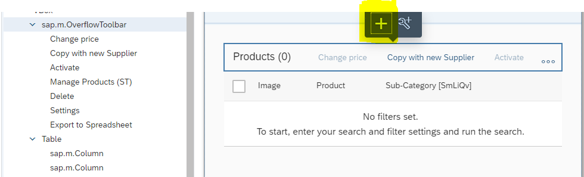
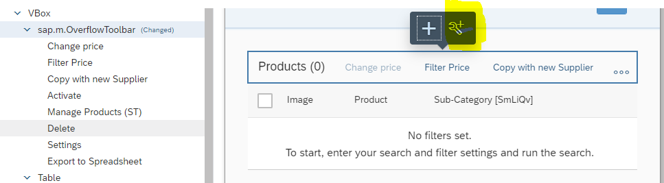

Adaptation Extension Example: Adding a Button to the Table Toolbar in the List
Report
In this example, you add a button to the table toolbar in the list report and extend it
to filter only the records which have a price that is greater than or equal to
1000.
Select the table tool bar and choose Add Fragment.

Under Target Aggregation, select
content and choose your preferred index value. Choose
Create New to create the fragment. If the fragment is
already there, you can search for it.
Enter a fragment name, for example, FilterPriceButton, and choose
Create.
Write the following code in the auto-generated
FilterPriceButton.fragment.xml
file. Note that the bold code needs a supporting function in the extension
controller. This is described in the next step.
Create a controller extension. Select the table toolbar as described under step
1 and choose Extend with Controller.

Enter the controller name, for example, ListReportExtension, and choose
Extend.
The system generates the controller extension file
ListReportExtension.js.
This
auto-generated file contains predefined life-cycle functions under the
Override block. All extensibility functions
provided by SAP Fiori elements should be consumed inside
Override. The custom-defined functions should be
consumed outside the Override block.
To
complete the example, copy and paste the code shown below to
ListReportExtension.js.
In the adaptation editor, choose the Preview tab page
and choose Go. Check the value in the
Price field for all records.
Choose Filter Price and check the value in the
Price field for the filtered records.